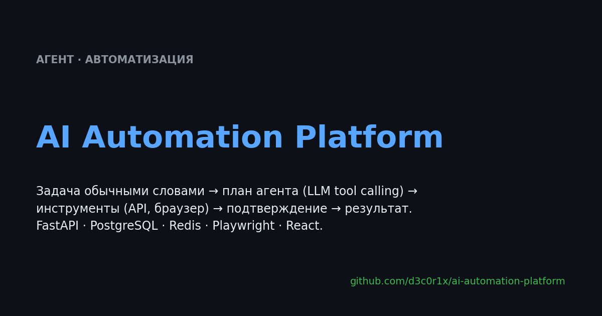

🚀 Ключевые проекты

AI Automation Platform
Задача → план → инструменты → результат. MVP-платформа, где запрос на естественном языке превращается в проверенный план, ставится в очередь, исполняется воркером и выдаёт результат. Перед внешним действием можно остановиться и попросить подтверждение человека.

Smart Shopper
AI-ассистент покупок. Поиск по тексту и фото, реальные данные Ozon/Яндекс Маркета/Wildberries, сравнение цен и проверка требований по отзывам. Telegram + React Mini App используют общий backend и состояние сессии.
MEXC × DEX Arbitrage Monitor
Асинхронный монитор арбитражных возможностей. On-chain котировки, pool discovery, fees/slippage, подбор размера сделки, сигналы и web-dashboard. Репозиторий показывает развитие проекта от V1 до V6 с отдельными тестами и ревью.

Finance Bot
Local-first финансовый ассистент. Vision-модель и Tesseract независимо читают чек, затем результат проверяется арифметикой. Есть бюджеты, долги, подписки, отчёты и desktop-панель с общей бизнес-логикой.

Paint by Numbers · демо
Фото → раскраска по номерам прямо в браузере. Image-processing pipeline, SLIC, k-means, Web Worker, Canvas, IndexedDB и экспериментальный SwiftUI/PencilKit-клиент.

Ozon Seller Bot
Автоматизация для продавца Ozon. Выручка, заказы, остатки, top products и алерты через Seller API. Есть детерминированный demo mode, поэтому сценарий можно показать без ключей магазина.
Supporting projects
Telegram Stars Payment Gateway
Прикладной компонент платной функции: подписки, платежи, возвраты и серверная проверка payload.
Marketplace Price Compare
Единственный оставленный представитель серии небольших marketplace-проектов: параллельный поиск, нормализация, дедупликация и price watch.